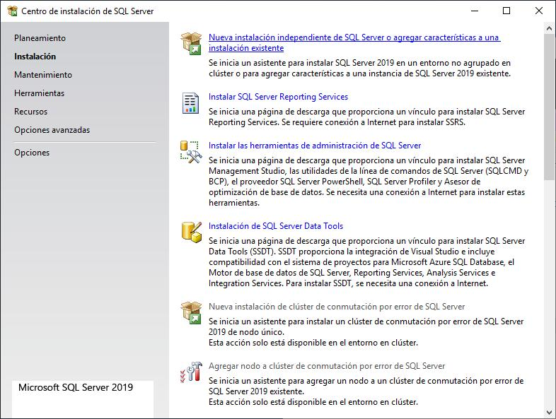
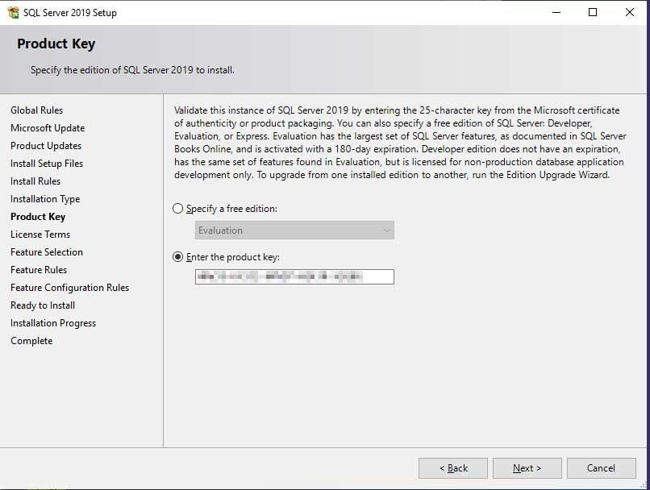
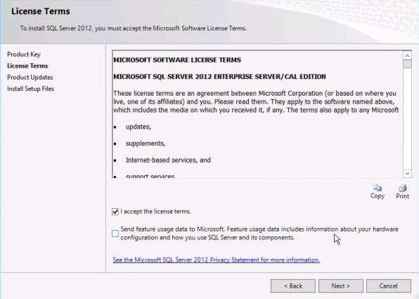
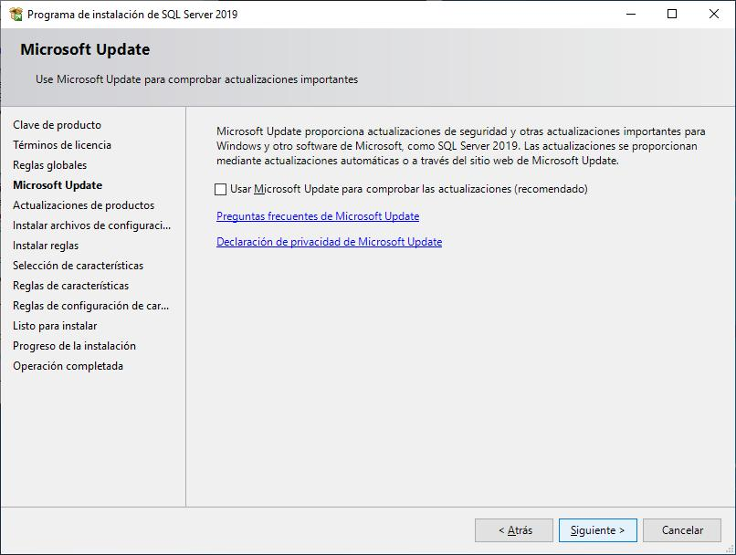
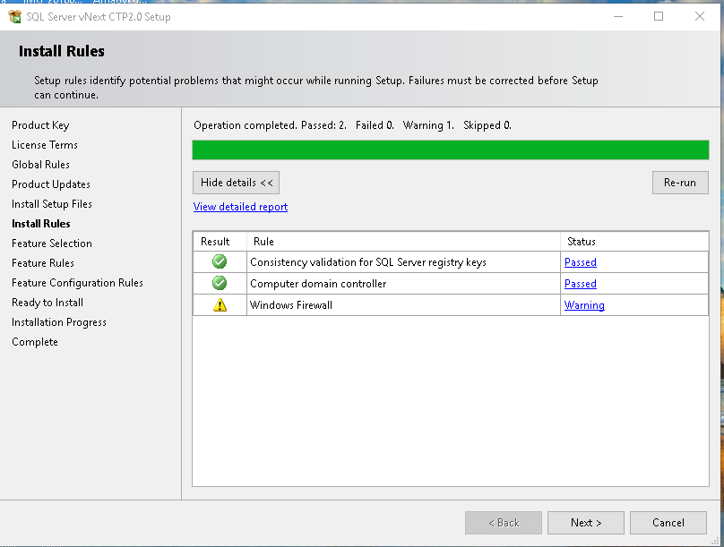
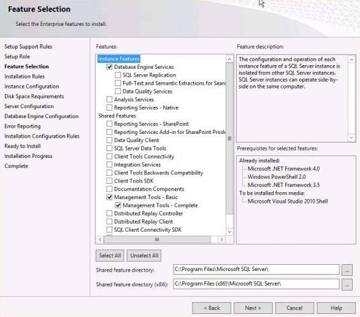
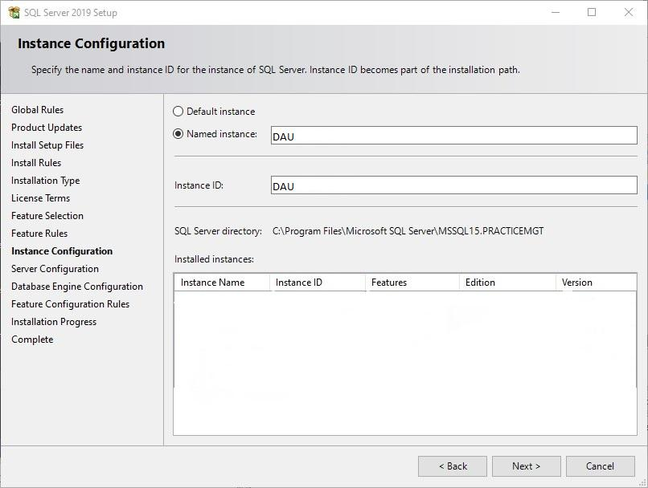
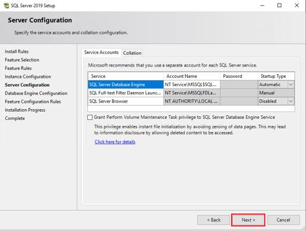
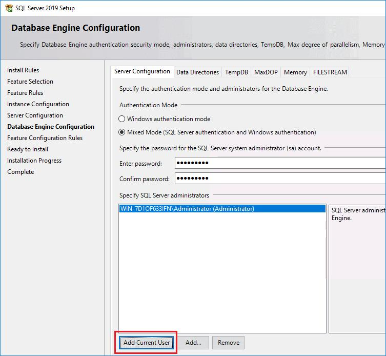

Guía paso a paso para instalar SQL Server 2019, elegir edición, configurar la instancia, habilitar el motor de base de datos y revisar las pantallas más importantes del instalador.
Al ejecutar el instalador de Microsoft SQL Server 2019 se abre el centro de instalación. Desde esa ventana se accede a las opciones de planificación, instalación, mantenimiento, herramientas y recursos.

Elegí Express, Developer, Standard o Enterprise según el uso.
Licencia, actualizaciones y reglas previas de instalación.
El motor de base de datos es obligatorio para trabajar con SQL Server.
Instancia, servicios, autenticación, usuarios y carpetas.
En esta pantalla se selecciona la edición de SQL Server que se desea instalar. La elección depende de si se usará para aprender, practicar, probar sistemas o trabajar en producción.

Es gratuita y limitada. Sirve para prácticas simples o sistemas pequeños.
Es gratuita e incluye prácticamente todas las funciones de Enterprise. Es la recomendada para aprendizaje, cursos, programación y pruebas.
Es una versión comercial orientada a empresas con necesidades habituales de producción.
Es la edición más completa, pensada para grandes empresas y escenarios avanzados.
Antes de copiar archivos, el instalador pide aceptar términos, ofrece buscar actualizaciones y ejecuta controles automáticos sobre el equipo.



| Control | Qué revisa | Comentario |
|---|---|---|
| Memoria y sistema | RAM, versión de Windows y compatibilidad | Debe cumplir los requisitos mínimos. |
| Permisos | Privilegios necesarios para instalar servicios | Conviene ejecutar como administrador. |
| Firewall warning | Estado del firewall de Windows | No suele impedir la instalación. |
| Restart required | Reinicio pendiente de Windows | Puede pedir reiniciar antes de continuar. |
Esta es una de las pantallas más importantes: define qué componentes se instalarán junto con SQL Server.

Es el motor principal de bases de datos. Es obligatorio: sin este componente SQL Server no funciona como servidor de bases de datos.
Permite replicar datos entre servidores. Normalmente no es necesario para principiantes.
Permite búsquedas avanzadas dentro de textos, por ejemplo buscar palabras en descripciones largas. Es recomendable activarlo.
Permite usar Python o R dentro de SQL Server. No es necesario para comenzar.
Después de elegir componentes, el instalador pide configurar la instancia, los servicios de Windows y el motor de base de datos.

Usa el nombre interno MSSQLSERVER. La conexión queda como SERVIDOR. Recomendada si habrá una sola instalación.
Permite asignar un nombre, por ejemplo SQL2019. La conexión queda como SERVIDOR\SQL2019.

Startup Type = Automatic.
| Opción | Qué significa | Recomendación |
|---|---|---|
| Windows Authentication | Solo permite usuarios de Windows. | Es más segura. |
| Mixed Mode | Permite usuarios de Windows y usuarios propios de SQL Server. | Muy recomendado para prácticas. |
| Usuario sa | Administrador principal de SQL Server cuando se usa Mixed Mode. | Usar contraseña fuerte. |
| Add Current User | Agrega el usuario actual de Windows como administrador SQL Server. | Siempre hacer clic. |
Muestra el avance de instalación del motor, servicios, librerías y herramientas internas. Puede tardar entre 5 y 40 minutos según el equipo.
Si aparece SUCCESS, SQL Server quedó instalado correctamente.